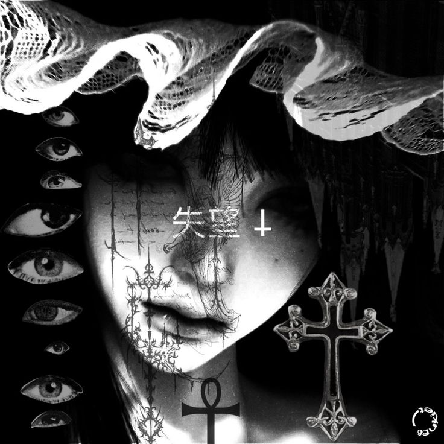
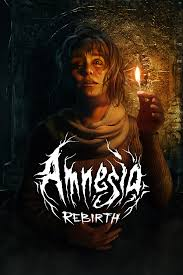
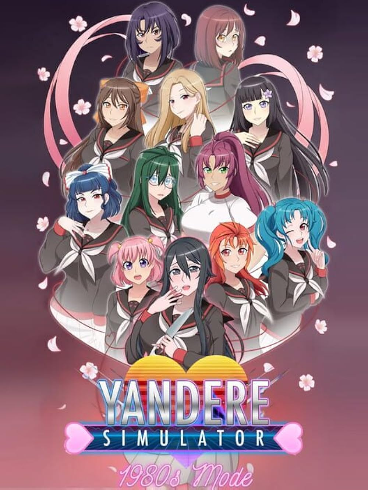
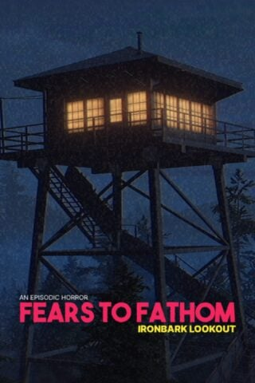
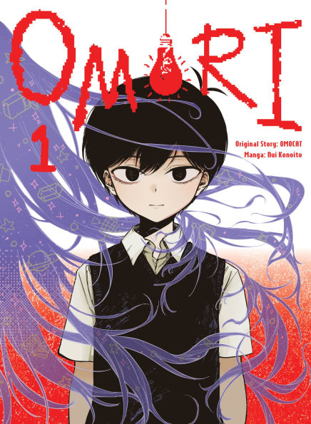
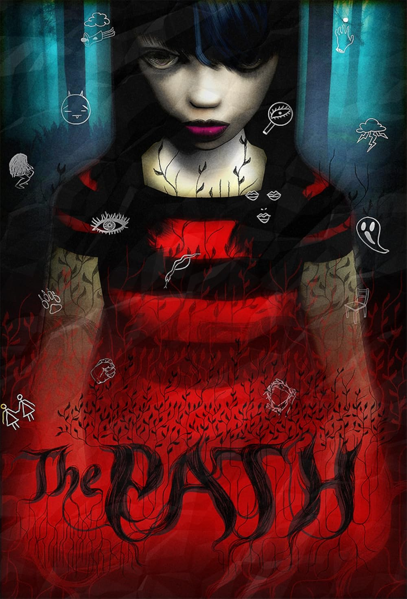
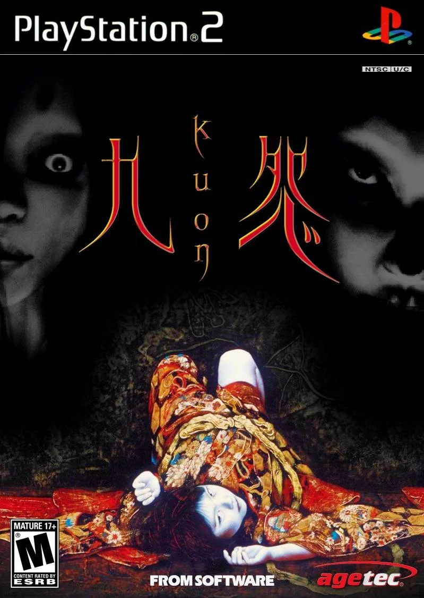
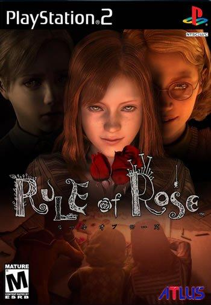
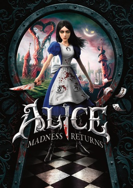
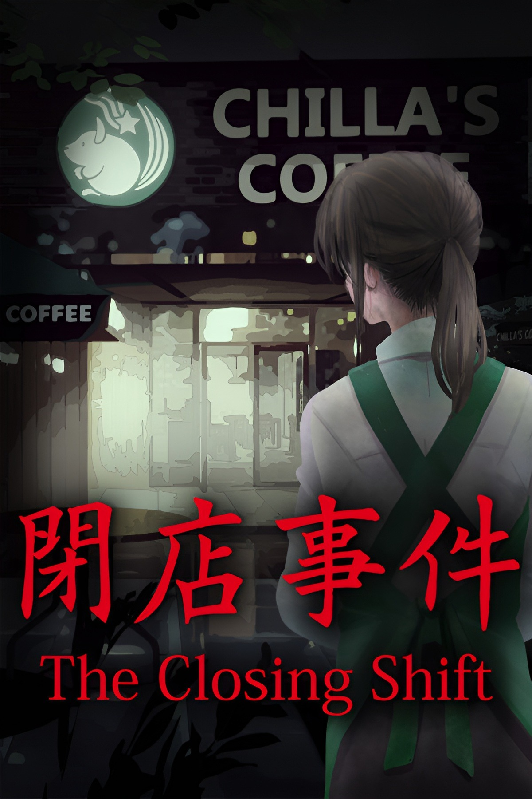

✧˖°. 사랑 𝜗𝜚 ‧₊˚ ⊹⦍ʟ⦎⦏ᴏ⦐⦍ʀ⦎⦏ᴇ⦐✧˖°. 사랑 𝜗𝜚 ‧₊˚ ⊹
 |
es un clásico survival horror en primera persona donde Daniel, el protagonista, despierta sin memoria en el Castillo de Brennenburg. Debe explorar el lugar, resolver acertijos y escapar de monstruos mientras gestiona su cordura, la cual disminuye al estar en la oscuridad o presenciar hechos perturbadores. |
 |
es un videojuego de sigilo y simulación donde controlas a Ayano Aishi, una estudiante japonesa obsesionada con su "senpai" (amor platónico). El objetivo principal es eliminar a 10 rivales que intentan enamorarlo en un plazo de 10 semanas, utilizando métodos que van desde el sabotaje social hasta asesinatos encubiertos. |
 |
Es una saga de terror psicológico episódico basada en "historias reales" enviadas por usuarios, caracterizada por su estética retro de los años 90 y atmósfera opresiva. Cada episodio sigue a un protagonista diferente enfrentando situaciones cotidianas que escalan a pesadillas de acoso, intrusión y supervivencia. |
 |
Los protagonistas exploran lugares malditos en Japón, enfrentando fantasmas vengativos usando la «Cámara Oscura», un dispositivo capaz de sellar espíritus. La trama suele centrarse en rituales fallidos, maldiciones familiares y la búsqueda de seres queridos desaparecidos en atmósferas opresivas. |
 |
Sunny, un adolescente hikikomori que, tras la muerte de su hermana Mari, se refugia en un mundo onírico y colorido llamado Headspace. Controlas a su alter ego, Omori, explorando recuerdos y traumas reprimidos para enfrentar la culpa, la depresión y la verdad sobre el pasado antes de mudarse de casa. |
 |
Es un juego de terror psicológico y exploración independiente basado en el cuento de Caperucita Roja. El jugador guía a seis hermanas a través de un bosque hacia la casa de la abuela, con la única regla de permanecer en el camino. |
 |
La historia, dividida en tres fases (Yin, Yang y Kuon), narra el terror sobrenatural en la mansión Fujiwara, infestada de monstruos debido a los experimentos prohibidos de Doman Ashiya, un exorcista que intenta resucitar a los muertos usando rituales oscuros y el poder de los capullos de seda. |
 |
Es una novela visual de terror psicológico disfrazada de simulador de citas. El jugador se une a un club escolar con cuatro chicas (Sayori, Yuri, Natsuki y Monika), pero la trama se vuelve oscura, explorando salud mental y rompiendo la cuarta pared, donde la presidenta manipula el juego. |
 |
Narra la pesadilla psicológica de Jennifer, una joven de 19 años atrapada en un orfanato de los años 30 dirigido por niños crueles. A través de una narrativa alegórica sobre el trauma infantil y el acoso, Jennifer debe cumplir misiones macabras para el "Club de la Rosa Roja" para sobrevivir. |
 |
Una Alicia adulta y traumatizada intenta recuperar la memoria sobre el incendio que mató a su familia. Mientras explora un Londres victoriano y un País de las Maravillas corrompido, descubre que su psiquiatra causó la tragedia, enfrentando su locura para aceptar la verdad. |
 |
La estudiante Sara Chidouin y su amigo Joe Tazuna son secuestrados por una organización misteriosa.Atrapados con otras 10 personas, deben participar en "Juegos de la Muerte" y votaciones principales donde la mayoría decide quién vive y quién muere, centrándose en puzzles, desconfianza y decisiones psicológicas. |
 |
Es un videojuego de terror psicológico independiente desarrollado por Chilla's Art. Chilla's Coffee se enfoca en el horror cotidiano con la estética retro característica del desarrollador. |